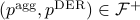
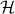

Research ProjectsMy research focuses on the development and application of advanced computational methods to power and energy systems, with recent emphasis on the development of novel control and optimization methods to enable high penetration of distributed energy resources and renewable energy sources in power systems. Characterization of aggregate flexibility of distributed energy resourcesThe high penetration of distributed energy resources (DERs) provides unprecedented aggregate flexibility for an active distribution network to reduce, shape, shift, and modulate its aggregate power consumption/injection at the substation level. Such aggregate flexibility enables aggregated DERs to provide grid services at the bulk power system level and facilitates their grid integration. In this research, we try to quantify the aggregate flexibility of DERs given the flexibility of individual device, their intertemporal coupling constraints, and network constraints. Specifically, given a description of the feasible region of the DER output () and the aggregate power at the substation () as , we are interested in the characterization of the set such that for any , there exists a vector of such that . In other words, the projection of onto the -space. It is well known that even in the simple case where is a polytope, finding a general projection in -representation from in -representation is NP-hard. Our research focuses on developing tractable approximation algorithms using advanced optimization and data-driven approaches to find high-quality approximation of . Relevant publications: Market integration of virtual power plantsIn this project, we are interested in the development of optimal bidding strategies of virtual power plants to bid into the day-ahead electricity market under a multistage stochastic programming formulation. We develop a policy that determines the optimal offering quantity of a virtual power plant as a function of the price given a Markovian forecast of the day-ahead market price. We develop tailored algorithms based on stochastic dual dynamic programming to improve the computational efficiency of the method. Relevant publications: Power flow analysisI'm interested in the explicit characterization of the properties of power flow solutions such as their existence, uniqueness within a specified subset of state space, and convergence of iterative algorithms to the solutions. Such analysis provides theoretical guarantees on the existence and rigorous bounds on power flow solutions given network parameters and loading conditions, without explicitly solving for the power flow equations. The deep understanding of the interplay between power flow solutions and the topological and parametric properties of the power networks provides new insights and tools for the solution of many emerging problems in power systems such as the stability of converter-based networks and power system optimization under uncertainties, which we are actively exploring. Relevant publications: |